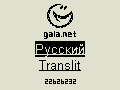
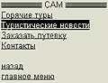
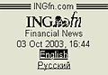
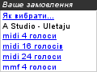

Sergey V. Musenko |
« back |
Participation in WAP and Mobile Internet projects |
|
* On this page listed only large and completed projects.
|
|

2001 - 2003
| |
wap.gala.net
Mobile portal of Gala.Net company.
It contains:
- more than 10 news sections;
- NBU exchange rates and currency calculator;
- dates and advertisements;
- wap-mail;
- wap-chat;
- air/train tickets reservation;
- psychological tests;
- anecdotes;
- greetings in GalaRadio air;
- GalaRadio chart "Pashina dvadcatka";
- football on TV program;
- logos maker (for UMC subscribers);
- directory of telephone codes etc.;
- visits counter.
All information taken from corresponding sections of Gala.Net portal.
Site works on mobile phones, wap-emulators or ordinary web-browsers (wap.gala.net/index.php).
It's over 100'000 hits on this wap-site daily!
Author's project.
Realization: WML, PHP, Perl, Python, SQL Sybase
|

September, 2002
| |
wap.ingfn.sk
WAP-site of ING Bank Slovakia (Slovakian and English versions).
Very detailed site - almost a copy of www.ingfn.sk web-site, including
banking parameters as graphs.
It is polymorphous: all information can be reading on any type of mobile device
(mobile phones or PDA)
or using ordinary web-browser.
It changes sizes and colors of graphics depending on type of device.
Site contains news sections, current banking parameters sections,
bank services descriptions and common information articles.
There is voting form and customer's feedback form.
Author's project.
Realization: WML, PHP, PHP GL, SQL Sybase
|
|

May, 2002
| |
WAP-site for SAM company umc.gala.net/sam/
WAP-site for travel company "SAM", Kiev, Ukraine.
Made as section of wap.umc.ua. Contains "hot tours" section,
news pages, ordering form and contact information.
Author's project.
Realization: WML, PHP, SQL Sybase
|

2001 - 2002.
| |
wap.ingfn.ro
WAP-site of ING Bank Romania (Romanian and English versions).
Contains news pages, current banking parameters sections,
bank services descriptions and common information articles,
a voting form and customers feedback form.
Author's project.
Realization: WML, PHP, SQL Sybase
|
|

2001 - 2002
| |
wap.ingfn.com.ua
WAP-site of ING Bank Ukraine (Russian and English versions).
Contains current banking parameters sections,
bank services descriptions and common information articles and customers feedback form.
Author's project.
Realization: WML, PHP, SQL Sybase
|

November, 2001
| |
WAP-site of M&S company (wap.m-and-s-ua.com)
WAP-site of moving company "M&S", Kiev, Ukraine.
Contains company description and services description articles,
news section and ordering form.
Author's project.
Realization: WML, PHP, SQL Sybase
|

Oct, 2005
| |
"LUX" action with Lux FM Radio
SMS project for UMC and KyivStar customers.
Abonents could order one of the last melodies that their listened at
Radio Lux FM.
Functionality includes: daily play-list updating;
user's choice of 5 last melodies depending on ordering time;
selecting any of 9 possible file formats (from RTTTL to MP3);
statistics and sales reports;
admin panel for content managing.
Project was made for MobEye.biz
Realization: PHP, Python, SQL Sybase.
|
|

Jul, 2005
| |
"20 cocktails" multimedia content action
SMS project for UMC and KyivStar customers.
By sending only 1 SMS each abonent has got one polyphonic ringtone (6 file formats)
and 2 wallpaper images (4 file formats) for their mobile phones.
Project was made for MobEye.biz
Realization: PHP, Python, SQL Sybase.
|

May, 2004
| |
"Zolotaya Zharptitsa" on "M1" TV channel
SMS project for UMC and KyivStar customers containing two parts:
- User SMS-dialogue support script;
- Administrative interface for statistics and managing.
Viewers of "M1" TV channel votes for favorite video clips.
TV channel administration takes votes results and builds next week chart.
Realization: PHP, Python, SQL Sybase.
|

October, 2003
| |
"Guess melody name" for JEANS mobile operator, Ukraine
Project contains of two parts:
- User interface on WAP -- asking questions and registering right answers.
- Administrative interface "Virtual Lottotron" for
emulating of selecting winners when one person takes several lotto tickets.
Users selects right variants of names of melodies consisting of 5 tones each.
Different telephone models support is realized (Nokia, Siemens and EMS models).
Author's project.
Realization: WML, PHP, SQL Sybase
|
|
December, 2002
| |
"UMC victorina"
Project contains of two parts:
- User interface on WAP -- asking questions and registering right answers.
- Administrative interface "Virtual Lottotron" for
emulating of selecting winners when one person takes several lotto tickets.
Author's project.
Realization: WML, PHP, SQL Sybase
|

December, 2002
| |
"Finish greeting" action
Project contains of two parts:
- User interface on WAP -- accepting greeting messages from users.
- Administrative interface for selecting the best messages.
Author's project.
Realization: WML, PHP, SQL Sybase
|
|